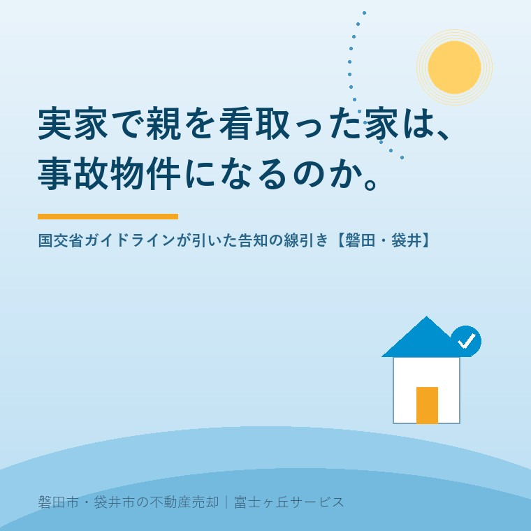

2026年8月11日｜カテゴリ：相場・地域・売却実務／相続・しまい方

この記事の要点
Q. 父を自宅で看取りました。畳の上で最期を迎えさせてやれてよかったと思っていたのですが、あとから親戚に「それ、事故物件になるんじゃないの」と言われて眠れなくなりました。実家はもう売れないのでしょうか。
A. 売れます。そして、その家は原則として「告知の対象」にはなりません。国土交通省が2021年（令和3年）10月にまとめた「宅地建物取引業者による人の死の告知に関するガイドライン」は、老衰や病死などのいわゆる自然死、および転倒事故や誤嚥といった日常生活の中での不慮の死については、原則として告げなくてもよいと整理しています。理由も明快で、そうした死は住宅で発生することが当然に予想されるものだから、というものです。分かれ目はただ一点、長期間人知れず放置されたことなどにより「特殊清掃等」が行われたかどうか。ここに当たれば、買主・借主の判断に重要な影響を及ぼす可能性があるものとして告げることになります。さらに知っておいていただきたいのが、賃貸には「概ね3年」という目安があるのに対し、売買にはその期間の定めがないという点です。だからこそ、売主が最初に書く「告知書」の一行が効いてきます。磐田市・袋井市・森町では、介護施設の運営から不動産事業を始めた富士ヶ丘サービスのような「介護×不動産」専門の会社に相談するという選択肢があります。
お盆です。実家に帰り、仏壇に手を合わせ、そのあとで誰かがぽつりと言う。
「ところでこの家、売るとしたら……事故物件扱いになるのかな」。
この一言で、ご家族の空気が変わるのを、私は何度も見てきました。最期まで家で見てあげたことを、後悔に変えてしまう言葉です。だから今日は、その不安に正面から答えます。
結論を先に置きます。自宅での看取りは、原則として告知の対象ではありません。これは私個人の見解ではなく、国が公式に文書で示した整理です。以下、2026年8月11日時点で国土交通省が公表している内容に沿って、線がどこに引かれているかを一つずつ確認していきます。
まず前提を一つ。「事故物件」という言葉は、法律にも宅地建物取引業法にも出てきません。不動産業界や世間が使ってきた通称です。
法律の側にあるのは、次の2つです。
| 根拠 | 内容 |
|---|---|
| 宅地建物取引業法 第47条第1号 | 宅建業者は、契約の締結について勧誘をするに際し、相手方の判断に重要な影響を及ぼすこととなるものについて、故意に事実を告げない、または不実のことを告げる行為をしてはならない |
| 民法（契約不適合責任） | 引き渡された目的物が種類・品質・数量に関して契約の内容に適合しないとき、買主は追完請求・代金減額請求・損害賠償請求・契約解除ができる |
つまり争点はいつも、「それは、買う人の判断に重要な影響を及ぼす事実か」という一点に集約されます。過去の裁判例では、これを心理的瑕疵（しんりてきかし）と呼んできました。
ところが、この「重要な影響」の中身が長らく不明確でした。どこまでを、いつまで、誰に言えばいいのか。基準がないので、業者側は「言わないと後で訴えられる」と怯え、とりあえず何でも告げる。結果として、ご自宅で穏やかに亡くなった方の家まで「事故物件」の棚に入れられるということが起きていました。
この状況を整理するために作られたのが、今日の主題である国交省のガイドラインです。契約不適合責任の話でも書いたとおり、売主が何を告げ、何を告げなかったかは、引渡し後のトラブルの中心に必ず出てきます。
「宅地建物取引業者による人の死の告知に関するガイドライン」は、2021年（令和3年）10月に国土交通省 不動産・建設経済局 不動産業課が公表しました。対象は居住用不動産です。取引の対象となる不動産で過去に人の死が生じた場合に、宅建業者が宅地建物取引業法上どこまでの義務を負うのかを、現時点における裁判例や取引実務に照らして一般的に妥当と考えられる範囲で整理したものです。
そのうえで、原則として告げなくてもよいとされたのが次の3つです。
| ケース | 売買 | 賃貸 | |
|---|---|---|---|
| ① | 対象不動産で発生した自然死（老衰、持病による病死など）、および日常生活の中での不慮の死（家庭内の階段からの転落、入浴中の溺水、食事中の誤嚥など） ※特殊清掃等が行われた場合を除く | 告げなくてよい | 告げなくてよい |
| ② | ①以外の死、または①のうち特殊清掃等が行われた場合で、事案の発生（発覚）から概ね3年間が経過したもの | 期間の定めなし | 告げなくてよい |
| ③ | 隣接住戸や、日常生活において通常使用しない集合住宅の共用部分で発生したもの | 告げなくてよい | 告げなくてよい |
①をもう一度読んでください。老衰。持病による病死。在宅で親を看取るというのは、まさにここに入ります。ガイドラインがこれを告知不要としたのは、そうした死が居住用不動産で発生することは当然に予想されるものであり、これを告げるとすればほとんどの中古住宅が対象になってしまうという、きわめて常識的な判断からです。
そして③。マンションの話に見えますが、戸建てでも意味を持ちます。隣の家で起きたことを、あなたが売るときに告げる義務はないということです。
ガイドラインには例外の扱いも書かれています。事件性、周知性、社会に与えた影響等が特に大きい事案については、上記にかかわらず告げる必要があるとされています。報道され、地域の誰もが知っているような事案は、期間の経過だけで消えるものではない、という趣旨です。
実務の感覚としても、ここは同意します。「近所が全員知っていること」を、買う人にだけ黙っている。これは制度の問題ではなく、後で必ず露見して信頼を壊します。
ここが今日いちばん実務的な話です。
ガイドラインは、自然死や日常生活の中での不慮の死であっても、過去に人が死亡し、長期間にわたって人知れず放置されたこと等に伴い、いわゆる特殊清掃や大規模リフォーム等が行われた場合には、買主・借主が契約を締結するか否かの判断に重要な影響を及ぼす可能性があるものと考えられる、としています。
言い換えれば、「亡くなったこと」ではなく「発見が遅れたこと」が線を引いているのです。
| 状況 | ガイドライン上の扱い（原則） |
|---|---|
| 家族が付き添い、在宅医療・訪問看護のもとで自宅で看取った | 自然死。告げなくてよい |
| 一人暮らしの親が朝、布団の中で亡くなっており、その日のうちに発見された | 自然死。告げなくてよい |
| 浴室で倒れ、当日〜数日で発見。通常の清掃で原状回復できた | 日常生活の中での不慮の死。告げなくてよい |
| 発見が大きく遅れ、特殊清掃や床材の張り替えが必要になった | 告げる（売買では期間の定めなし） |
| 自死・他殺など①以外の死 | 告げる（賃貸は発生から概ね3年経過で原則不要／売買は定めなし） |
磐田・袋井の現場で実際に多いのは、上の3行です。特殊清掃が入るケースは、相談全体から見ればごく一部。それなのに、ご家族の不安だけは全件に等しく発生している。この落差を埋めたくて、今日の記事を書いています。
混同されやすい点なので付け加えます。介護で使っていた部屋の畳を替えた、壁紙を張り替えた、介護ベッドを撤去して床を補修した。これらは特殊清掃ではありません。長期間の放置に伴う原状回復かどうかが判断の軸です。介護の跡を片づけただけであれば、ガイドラインが言う「特殊清掃等」には当たりません。
残置物や設備の扱いについては、残置物と現況渡しの話で別に整理しています。
ガイドラインでもっとも誤解が多いのが、いわゆる「3年ルール」です。
正確に言うと、この目安は賃貸借取引について示されたものです。賃貸借の対象不動産、および日常生活において通常使用する必要がある集合住宅の共用部分で発生した「①以外の死」または「特殊清掃等が行われた①の死」について、事案の発生（特殊清掃等が行われた場合はその発覚）から概ね3年間が経過した後は、原則として告げなくてもよいとされています。
一方で、売買取引については、経過期間の定めがありません。ガイドラインは、売買は取引額が大きく、居住期間も長期にわたることなどから、賃貸と同様の基準をそのまま当てはめることは適当でないとし、今後の裁判例の蓄積等を踏まえて必要に応じて見直すという立て付けにしています。
ここを「3年経ったから何も言わなくていい」と読み違えると危険です。実家を売る側の私たちに関係するのは、期限のない売買のほうです。
| 賃貸借 | 売買 | |
|---|---|---|
| 自然死・日常生活の中での不慮の死（特殊清掃なし） | 原則、告げなくてよい | 原則、告げなくてよい |
| 特殊清掃等が行われた場合／①以外の死 | 発生・発覚から概ね3年経過で原則不要 | 期間の定めなし |
| 事件性・周知性・社会的影響が大きい事案 | 期間にかかわらず告げる | |
そして、もう一つ。告げるべき事案かどうかにかかわらず、買主から問われた場合、あるいは社会通念上、買主が把握しておくべき特段の事情があると認識した場合には、告げる必要があるとされています。聞かれたら、答える。ここは期間も類型も関係ありません。
では、宅建業者はどうやって過去の死を知るのか。ここも、ガイドラインは明確に書いています。
宅建業者は、原則として、売主・貸主に対して告知書（物件状況等報告書）等に過去に生じた事案を記載してもらい、その記載をもって調査義務を果たしたものとする。近隣住民への聞き込みやインターネットサイトの調査など、自ら能動的に調査する義務までは負わないという整理です。
これは何を意味するか。実務のスタート地点は、売主であるご家族が書く一枚の紙だということです。
告げる場合の内容についても、ガイドラインは範囲を限定しています。
ここは、ご家族にとって救いになる部分だと思います。親がどんなふうに亡くなったかを、見知らぬ買主に事細かに説明する必要はない。制度がそう定めています。
そのうえで、私が実際にお願いしていることを書きます。迷ったら、事実だけを短く書いてください。「令和◯年◯月、当該建物1階和室にて、被相続人（当時◯歳）が病気により死亡。在宅医療を受けており、家族が看取った。特殊清掃は行っていない」。この程度で十分です。
書いたことで売れなくなるのではないかと心配される方がいますが、逆です。書いてあるから、あとで問題にならない。宅建業者が買主に説明するときも、この一行があれば「自然死であり、告知の対象ではありません」と根拠をもって言えます。空欄のまま出されるほうが、よほど危ない。
なお、告知書は不動産会社に丸投げする書類ではありません。売主本人が知っている事実を書く書類です。ここを代筆させると、後に「業者が勝手に書いた」「聞いていない」という争いの種になります。査定のからくりの話で書いたとおり、契約前の書類ほど、時間をかける価値があります。
実家じまいでは、こういう状況がよくあります。
「祖父の代のことは分かりません」。
昭和40年代に建った家、途中で誰が住んでいたか判然としない期間がある、親も既に亡くなっている。この場合、告知書にどう書くか。
答えは「知らないことは、知らないと書く」です。虚偽を書けば宅建業法や契約不適合の問題になりますが、知らない事実を知らないと書くことは、虚偽ではありません。「売主が所有・居住していた◯年以降について、把握している事案はない。それ以前は不知」。この書き方で構いません。
そして、ここでこそきょうだいで話しておく意味があります。お盆に全員が集まるこの数日は、「この家で何があったか」を確認できる、年に一度の機会でもあります。長男は知らないが、嫁いだ姉は覚えている。そういうことが本当にあります。境界立会いはお盆が狙い目と同じで、人が集まっているうちにしか片づかない仕事です。
この地域は、在宅で最期を迎える方が、都市部より多い印象があります。三世代同居がまだ残り、近所づきあいがあり、訪問看護と地域包括支援センターがきちんと機能している。「病院ではなく家で」を選べる条件が、そろっている地域です。
富士ヶ丘サービスは、磐田市見付で介護施設を運営するところから不動産の仕事を始めました。ですから私たちのところには、看取りの現場と、その後の家の話が、地続きで持ち込まれます。この順番で仕事をしていると、はっきり分かることがあります。
ご家族が本当に恐れているのは、値段が下がることではありません。「親の最期が、家の欠点として語られること」です。査定額の話をする前に、まずここをほどかないと、売却の話は前に進みません。
もうひとつ、地域特有の論点があります。近所の記憶です。磐田・袋井のような地域では、10年前のことでも、近隣の方は覚えています。買主が内覧のあとで近所に挨拶に行き、そこで初めて話を聞く──ということが、実際に起こり得ます。
だからこそ私は、告知義務の有無とは別に、伝え方を設計します。告げる義務のない自然死であっても、「この家はお父様を最期まで看取った家です」と、こちらから先に、敬意をもって伝える。隠していたのではなく、大切にしていたのだと分かれば、多くの買主はむしろ安心されます。これは義務ではなく、売り方の技術です。
そして値付け。告知の対象でない以上、価格を下げる理由もありません。「事故物件だから安く」と最初から言ってくる買取業者がいたら、根拠を尋ねてください。ガイドラインのどこに当たるのか、説明できないはずです。買取価格が相場の7割になる理由で書いたとおり、買い叩きの口実は、いつも「ご家族が不安に思っていること」の上に立てられます。
親を家で看取ったことは、家の欠点ではありません。国も、そう整理しています。
それでも不安が残るなら、告知書の下書きを一度お持ちください。この事案は告げる必要があるのか、ないのか。ガイドラインのどの行に当たるかを、一緒に確認します。その30分で、多くのご家族の肩の力が抜けます。
ふじがおか実家カルテ｜告知書の下書きから一緒に
「この家、事故物件ですか」に、根拠で答えます。
在宅での看取り、施設で亡くなった場合、発見が遅れた場合──それぞれがガイドライン上どう扱われるかを整理し、告知書に書く文面の下書きまでお出しします。売り方・伝え方の設計もあわせてご提案します。固定資産税の通知書と、外観の写真が数枚あれば始められます。
本記事は2026年8月11日時点で国土交通省ウェブサイト等に公表されている情報に基づく一般的な解説です。国土交通省のガイドラインは、宅地建物取引業者が宅地建物取引業法上負うべき義務の解釈について、現時点における裁判例や取引実務に照らして一般的に妥当と考えられるものを整理したものであり、個別の紛争において裁判所の判断を拘束するものではありません。また同ガイドラインは居住用不動産を対象としており、オフィス等はその対象外です。人の死が生じた建物を取り壊した後の土地取引の取扱いなど、ガイドラインに明記されていない論点も残されています。実際に告げるべきかどうかは事案ごとの個別判断となりますので、売却をご検討の際は宅地建物取引業者にご相談ください。契約不適合責任や損害賠償の可否については弁護士に、相続登記は司法書士に、税務は税理士または税務署にご確認ください。個別のご相談は当社までどうぞ。

この記事を書いた人：大石浩之（宅地建物取引士）
磐田市・袋井市・森町で「介護×相続×空き家」に特化した不動産売却支援を行う富士ヶ丘サービスの代表取締役・宅地建物取引士。介護施設の運営から不動産事業を始めた経験をもとに、売主とご家族が困らない売却を一件ずつお手伝いしています。プロフィール
磐田市・袋井市・森町の実家じまい・相続空き家相談
固定資産税通知書だけでも相談できます
住所があいまいでも、通知書や写真から名義・道路・農地・残置物の確認順を整理します。カルテ申込またはLINEで状況を送ってください。
富士ヶ丘サービス株式会社／静岡県磐田市見付5789番地1／TEL:0538-31-3308／静岡県知事 (2) 第14083号／代表取締役・宅地建物取引士 大石 浩之